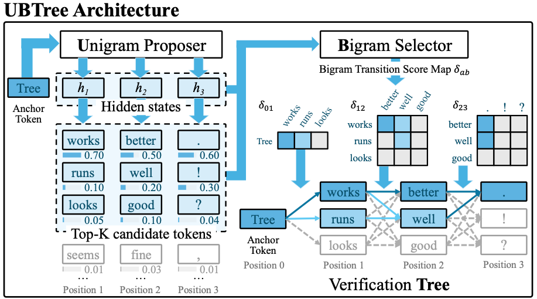
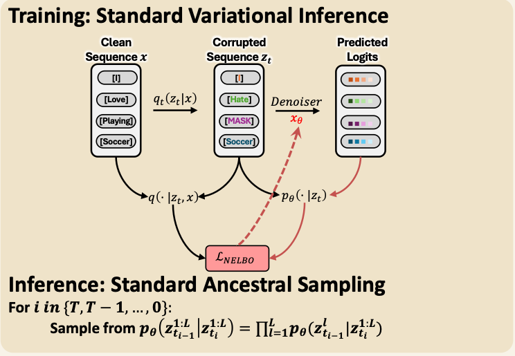
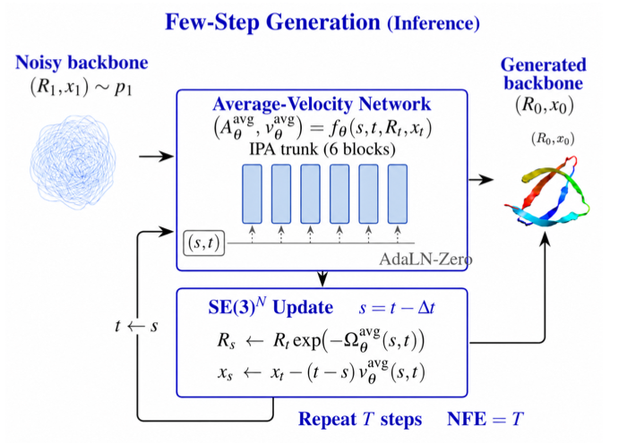
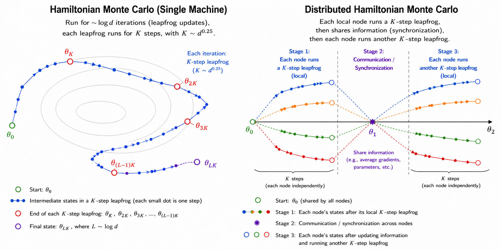

UBTree: Parallel Tree Drafting via Unigram and Bigram Models for Speculative Decoding
Preprint, 2026 · Submitted to ICLR 2027
Parallel tree drafting with a bigram selector and tree-native training for efficient speculative decoding.
Department of Statistics · Purdue University
I am a third-year PhD student in Statistics at Purdue University, advised by Prof. Guang Lin and Prof. Qifan Song.
My research focuses on efficient large language models, ranging from diffusion language models to speculative decoding. I develop pretraining methods that teach diffusion language models to self-correct, and tree-based speculative decoding methods that accelerate LLM inference.
Previously, I received my M.S. in Statistics from Duke University, where I worked with Prof. Surya Tokdar, and my B.S. in Mathematics and B.A. in Economics from Wuhan University. In summer 2026, I was a research intern on the Inclusion AI LLaDA team at Ant Group, mentored by Dr. Jianguo Li.
* Equal contribution.

Preprint, 2026 · Submitted to ICLR 2027
Parallel tree drafting with a bigram selector and tree-native training for efficient speculative decoding.

ICML 2026
Learning remask-free self-correction during discrete diffusion pretraining to improve parallel language generation.


NeurIPS 2026
Master’s thesis · Duke University, 2024
Ant Group · Inclusion AI LLaDA Team
PhD in Statistics
MS in Statistics
BS in Mathematics & BA in Economics
Conference reviewer: ICLR 2027.